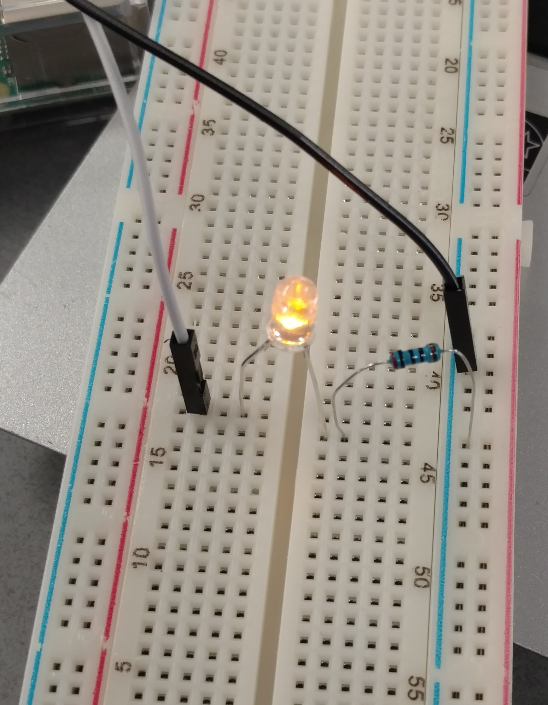
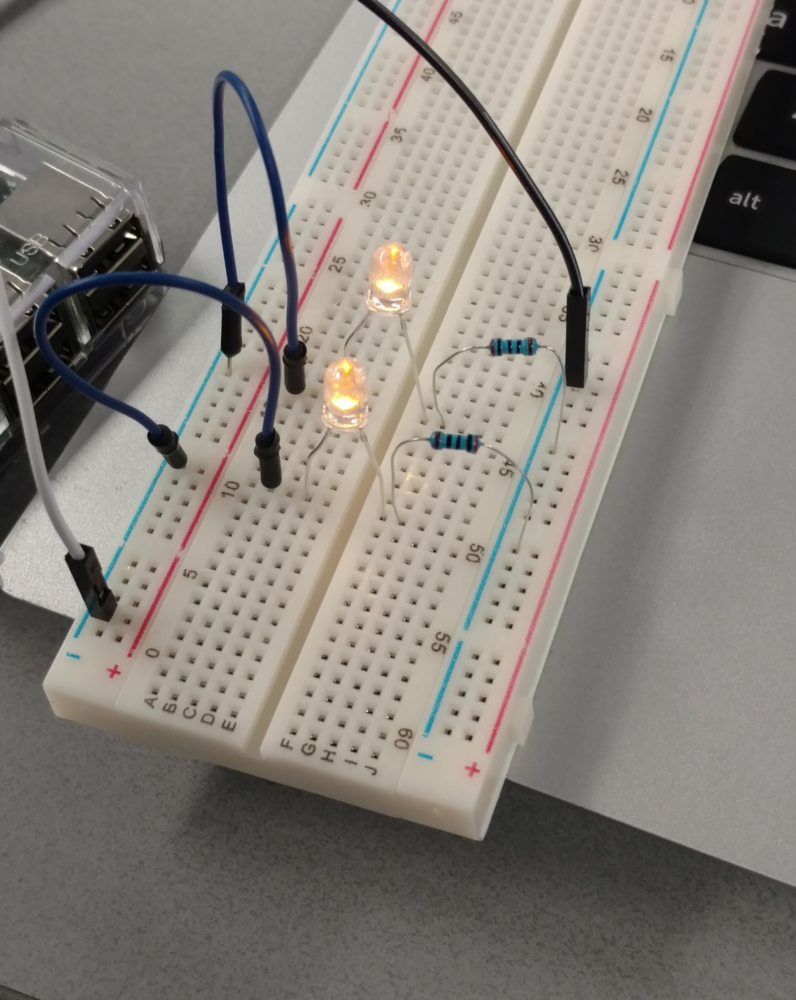
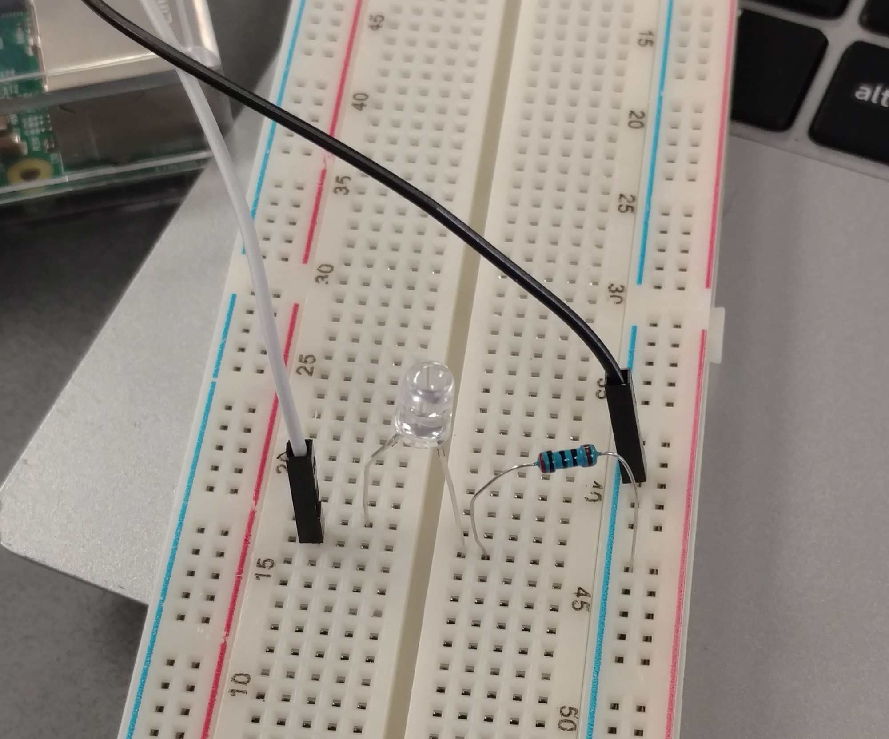
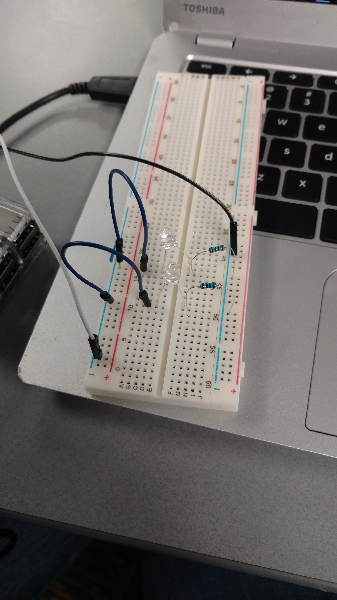
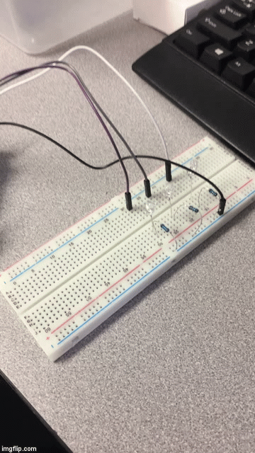
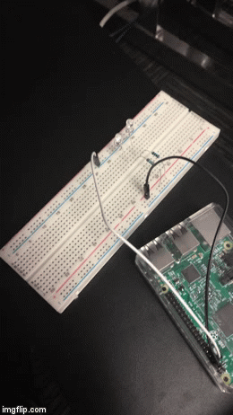

The first challenge in the Python LED Project was to create a circut that lights up at least one light. In the pictures below, the white wire is the "power" wire, and the red wire is the "ground" wire. The power connects to the same bar as the resistor, and the ground connects to the same bar as the negative ends of the lights, which makes the LED light up. A small mistake can ruin the whole outcome of the motherboard.
The other 2 circuits do not work because the power cables do not connect to the same bar as the resistor, which means there's no powere flowing into the LEDs. The circuit at the bottom left does not work because cable is not powering the LED, rather it powers an empty slot. The other circuit at the bottom right does not work because the power is not being transfered to the LEDs, pretty similar to the other picture only that this cicuit has jump wires.
 Challenge #1 in the Python LED Project was to code a script that would show a pattern of flashing lights for about five seconds. Camerie and I added two extra LEDs and made them flash each one after another. Cool isn't?
For challenge #2 Camerie and I made our LEDs say "HELLO" in morse code. Click here for the code
{kind=link}